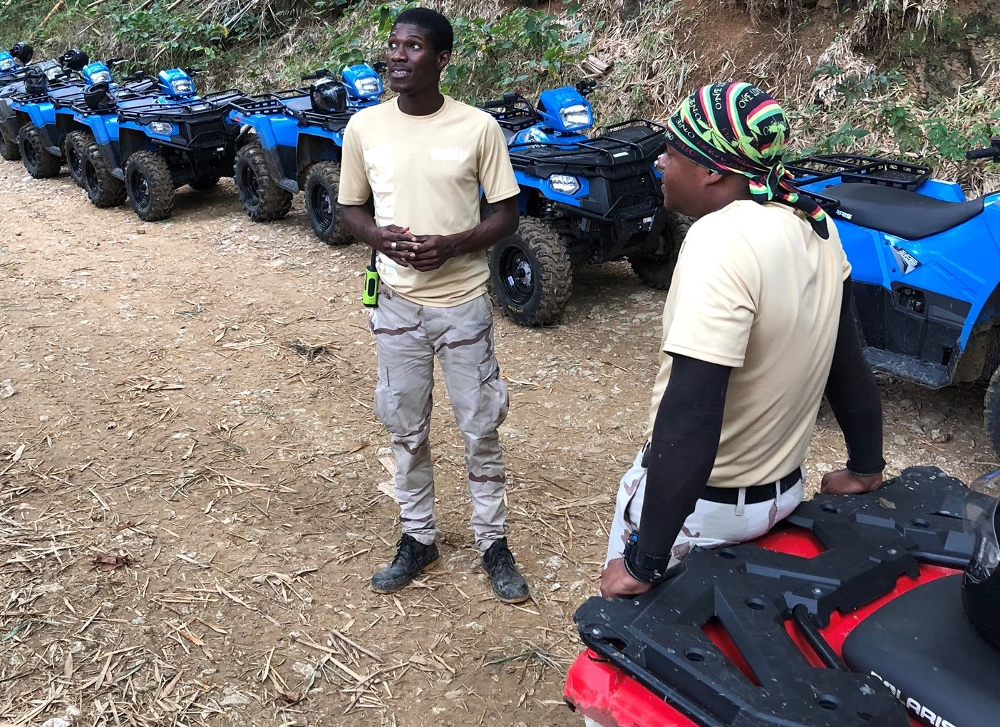
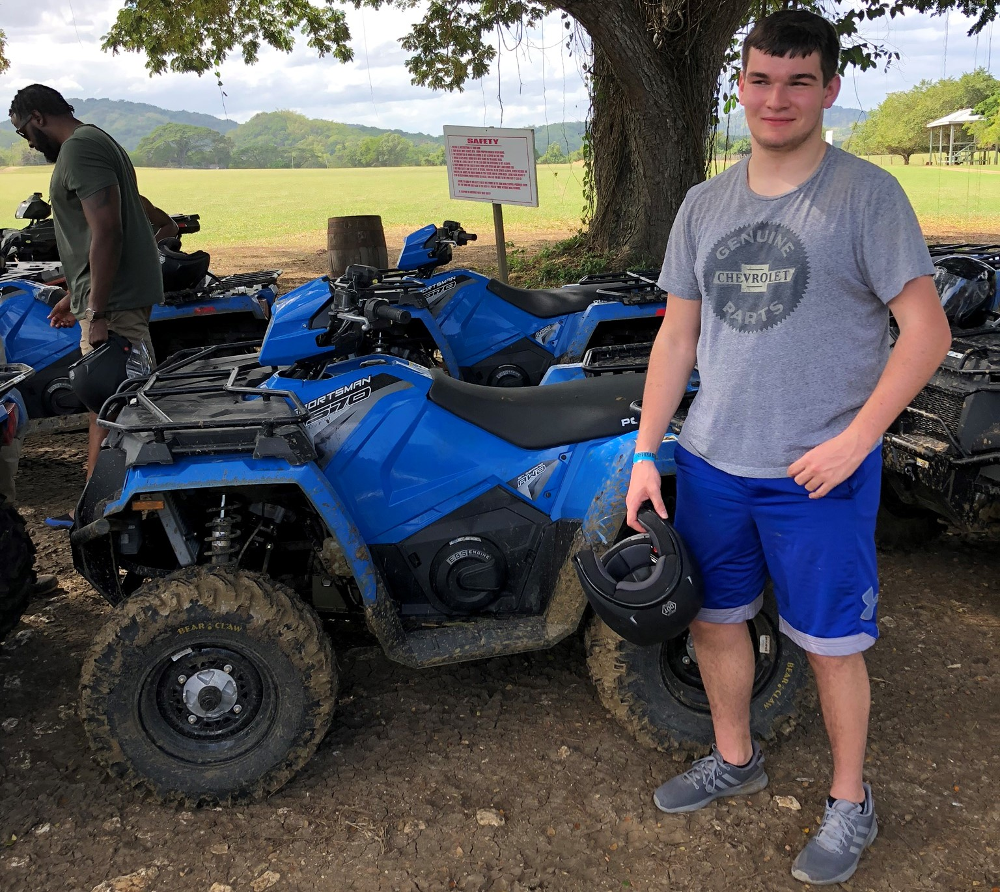

{kind=link}
ATV Expedition
A few days later we decided that an ATV adventure was for us. We traveled a scenic route to Chukka, also in Montego Bay. Each member can drive their own ATV or ride in a side by side. We went with our own vehicles, so fun! The ride began with a quick overview of the ATV controls and a few practice laps in a field. Then we were off into the rain forest over muddy and rocky terrain, up and down steep inclines and sharp turns. We passed thru a small local village, then went further in to the rainforest and stopped at a huge bamboo grove; we learned that bamboo is very invasive and not a native plant to Jamaica.
Then we drove thru a farm area saw pigs, cows and lots of goats with their cute babies. After that we returned back to the main camp, ready for a cool drink and a dip in the ocean back at the hotel. An added perk on this trip was our driver offered interesting details of the country side and plants, he showed us banana trees as well as Ralph Lauren’s home overlooking the water. He was very entertaining.
Last, I should mention that at this same place you can also choose to go horseback riding, which includes a chance to ride the horse in the ocean. That looked fun, maybe next time!
 {kind=link}
{kind=link}